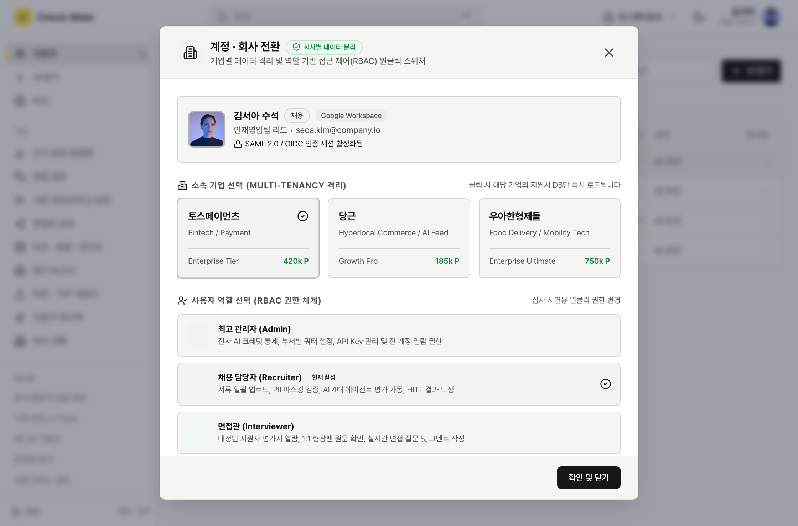
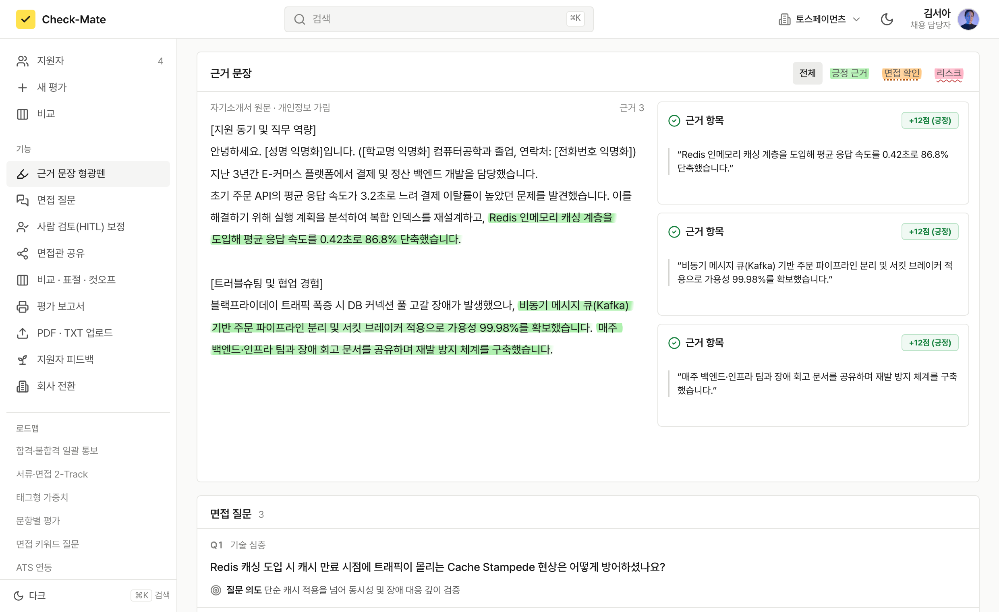
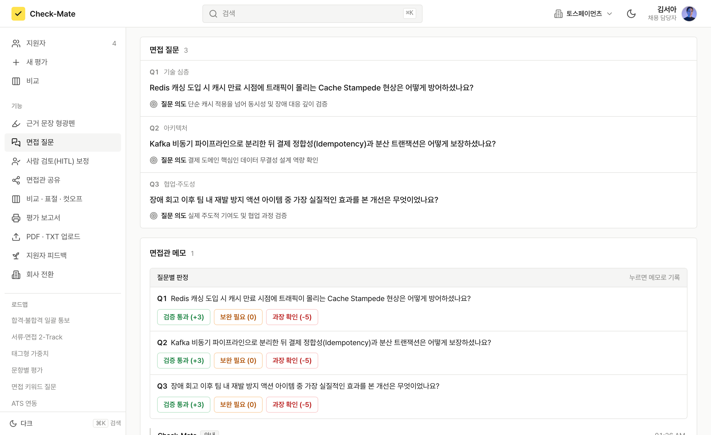

I . 프로젝트 배경 및 목적 도입 배경 및 문제 정의
1 주제 선정 배경 : 스타트업 채용 현장의 3대 병목과 Check-Mate 도입 스토리

2 기존 서류 심사 및 단일 프롬프트 AI의 한계와 Check-Mate 해결 방안
| 채용 단계 | 기존 수기 검토 및 단일 프롬프트 AI (AS-IS) | Check-Mate 멀티에이전트 코파일럿 (TO-BE) |
|---|---|---|
| 개인정보·공정성 | 원문 그대로 외부 LLM 전송 시 개인정보 유출 및 학벌·신상 편향 | 클라이언트·게이트웨이 이중 7종 PII 정규식 자동 비식별화 |
| 서류 팩트체크 | 단일 프롬프트 요약 시 원문 날조(할루시네이션) 및 과장 서술 통과 | 4대 에이전트 적대적 교차 검증 + 3단계 퍼지 원문 형광펜 매칭 |
| 면접 준비·협업 | 일반론적 질문 수기 작성, 이메일·엑셀에 흩어진 면접관 점수 수기 취합 | 과장 의심 문장 타깃 압박 질문 3종 생성 + 원클릭 링크 면접 평가 공유 |
3 최종 목표 : 단일 워크스페이스 기반 End-to-End 채용 검증 자동화
II . 설계 및 구조 핵심 알고리즘 및 에이전트 파이프라인
1 4대 멀티에이전트 적대적 교차 검증(DAG) 파이프라인 및 역할 명세
| 에이전트 | 실행 방식 | 핵심 책임 (단일 책임 원칙 분리) | 핵심 출력 (JSON Schema) |
|---|---|---|---|
| 1. Grounding Agent | Stage 1 (순차) | 자기소개서 본문 내 정량 성과·경험 문장 1:1 발췌 | 원문 인용구 (targetQuote) |
| 2. Critic Agent | Stage 2 (순차) | 기여도 부풀리기·수치 비약·모순 적대적 반박 | 과장 의심 사유·리스크 태그 |
| 3. Supervisor Agent | Stage 3 (병렬) | 발췌 근거와 반박 의견을 종합해 5대 역량 채점 | 역량별 점수·종합 판정 |
| 4. Interviewer Agent | Stage 4 (병렬) | Critic 지적 사항을 검증할 실전 압박 질문 도출 | 압박 면접 질문 3종·가이드 |
2 이중 방어선 7종 PII 비식별화 및 3단계 퍼지(Fuzzy) 원문 오프셋 바인딩
3 기술 스택 및 전체 시스템 아키텍처 작동 구조
3-1 계층별 핵심 기술 스택 (Tech Stack)
React 18
SPA 프론트엔드
Vite · Tailwind
번들링 · 디자인
Web Worker
비동기 퍼지 매칭
Express BFF
API 게이트웨이
Spring Boot 3
코어 엔터프라이즈
Claude API
Haiku 5.5 4-Agent
Supabase DB
클라우드 영속성
PostgreSQL
7-Table RLS 격리
GCP Cloud Run
서버리스 배포
Docker · CI/CD
Cloud Build 자동화
3-2 전체 시스템 아키텍처 및 데이터 흐름도 (End-to-End Architecture)
3-3 Supabase PostgreSQL 멀티테넌트 DB 스키마 및 RLS 관계도 (ERD)

Row-Level Security (RLS) : tenant_id = current_tenant_id()
• tenants / users : 기업별 도메인, 크레딧 한도(total/used) 및 RBAC 역할 정의
• job_postings / applicants : 직무별 5대 역량 가중치(JSONB) 및 비식별 자소서 원문 저장
• evaluations : 4-Agent 감사 결과, 원문 발췌 근거(JSONB), HITL 보정 점수·사유 기록
• share_links / interview_collaborations : 만료 토큰 기반 면접관 공유 및 질문별 코멘트·가감점 기록
III . 프로젝트 수행 결과 및 핵심 기능 GCP Cloud Run 라이브 프로덕션 화면
(1) 기업별 데이터 격리(Multi-Tenancy) & RBAC 스위처
STEP 1

기업 테넌트(토스·당근·배민) DB 즉시 분리 및 4단계 RBAC 역할 권한 전환
(2) 신규 자기소개서 PDF 업로드 & 이름 자동 추출
STEP 2

PDF·TXT 다중 파일 업로드 시 지원자 성명 및 본문 텍스트 자동 파싱
(3) 7종 PII 익명화 & 원문 3색 형광펜 팩트체크
STEP 3

[성명·학교명 익명화] 치환 본문과 AI 발췌 긍정·리스크 근거 1:1 매칭
(4) 맞춤형 압박 면접 질문 & 면접관 평가 메모
STEP 4

과장·모순 의심 구간을 파고드는 압박 질문 3종 및 면접관 빠른 채점
(5) 사람 검토(HITL) 점수 보정 & 1-Click 공유
STEP 5

AI 초안 점수를 채용 담당자가 직접 검토·보정하고 감사 로그에 기록
(6) 지원자 다차원 역량 비교 & 컷오프 대시보드
STEP 6

가중치 슬라이더 기반 지원자 순위 재계산, 표절 경고 및 리포트 출력
IV . 기대 효과 및 활용방안 도입 효과 및 활용 도메인
| 구분 | 핵심 도입 기대효과 | 주요 활용 방안 및 확산 도메인 |
|---|---|---|
| 기업 채용팀 (검토 효율·정확도) |
반복적인 서류 정독 병목 해소 및 Critic 적대적 감사를 통한 허위·과장 스펙 지원자 사전 검증 | 전담 인사팀이 부족한 스타트업·중소기업의 실무진 면접 코파일럿 및 채용 협업 워크스페이스 |
| 구직자·사회적 가치 (공정 채용·보안) |
7종 개인정보 로컬 비식별화로 학벌·신상 편향 없는 블라인드 서류 평가 및 개인정보 유출 방지 | 공공기관·기업 블라인드 채용 심사 보조 도구 및 지원자 맞춤형 강점·보완점 피드백 리포트 발행 |
| 클라우드·확장성 (B2B SaaS) |
Claude Haiku 5.5 경량 파이프라인과 PostgreSQL RLS 기반의 저비용 멀티테넌트 구조 | 기업별 인재상·금기어 커스텀 설정(Prompt Studio) 및 대학교 취업지원센터 AI 자소서 첨삭 연동 |